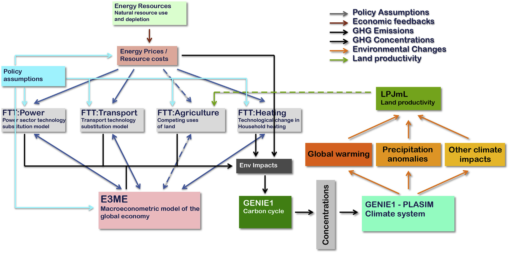

2 Climate Models
Overview text on selected Climate Models
2.2 Mental Picture of Greenhouse Effect
Benestad
The popular picture of the greenhouse effect emphasises the radiation transfer but fails to explain the observed climate change.
The earth’s climate is constrained by well-known and elementary physical princi- ples, such as energy balance, flow, and conservation. Green- house gases affect the atmospheric optical depth for infrared radiation, and increased opacity implies higher altitude from which earth’s equivalent bulk heat loss takes place. Such an increase is seen in the reanalyses, and the outgoing long- wave radiation has become more diffuse over time, consistent with an increased influence of greenhouse gases on the vertical energy flow from the surface to the top of the atmosphere. The reanalyses further imply increases in the overturning in the troposphere, consistent with a constant and continuous vertical energy flow. The increased overturning can explain a slowdown in the global warming, and the association between these aspects can be interpreted as an entanglement between the greenhouse effect and the hydrological cycle, where reduced energy transfer associated with increased opacity is compensated by tropospheric overturning activity.
William Kininmonth’s ‘rethink’ on the greenhouse effect for The Global Warming Policy Foundation. He made some rather strange claims, such as that the Intergovernmental Panel on Climate Change (IPCC) allegedly should have forgotten that the earth is a sphere because “most absorption of solar radiation takes place over the tropics, while there is excess emission of longwave radiation to space over higher latitudes”.
Kininmonth’s calculations are based on wrong assumptions. When looking at the effect of changes in greenhouse gases, one must look at how their forcing corresponds to the energy balance at the top of the atmosphere. But Kininmonth instead looks at the energy balance at the surface where a lot of other things also happen, and where both tangible and latent energy flows are present and make everything more complicated.
It is easier to deal with the balance at the top of the atmosphere or use a simplified description that includes convection and radiation.
Another weak point is Kininmonth’s assumption of the water vapour being constant and at same concentrations as in the tropics over the whole globe. Focusing on the tropics easily gives too high values for water vapour if applied to the whole planet.
Another surprising claim that Kininmonth made was that ocean currents are the only plausible explanation for the warming of the tropical reservoir, because he somehow thinks that there has been a reduction in the transport of heat to higher latitudes due to a mysterious slow down of ocean currents. It is easy to check trends in sea surface temperatures and look for signs that heat transport towards higher latitudes has weakened. Such a hypothetical slowdown would suggest weaker ocean surface warming in the high latitudes, which is not supported by data.
Benestad (2022) New misguided interpretations of the greenhouse effect from William Kininmonth
Is it possible to provide a simple description that is physically meaningful and more sophisticated than the ‘blanket around earth’ concept?
The starting point was to look at the bulk – the average – heat radiation and the total energy flow. I searched the publications back in time, and found a paper on the greenhouse effect from 1931 by the American physicist Edward Olson Hulburt (1890-1982) that provided a nice description. The greenhouse effect involves more than just radiation. Convection also plays a crucial role.
How does the understanding from 1931 stand up in the modern times? I evaluated the old model with modern state-of-the-art data: reanalyses and satellite observations.
With an increased greenhouse effect, the optical depth increases. Hence, one would expect that earth’s heat loss (also known as the outgoing longwave radiation, OLR) becomes more diffuse and less similar to the temperature pattern at the surface.
An analysis of spatial correlation between heat radiation estimated for the surface temperatures and that at the top of the atmosphere suggests that the OLR has become more diffuse over time.
The depth in the atmosphere from which the earth’s heat loss to space takes place is often referred to as the emission height. For simplicity, we can assume that the emission height is where the temperature is 254K in order for the associated black body radiation to match the incoming flow of energy from the sun.
Additionally, as the infrared light which makes up the OLR is subject to more absorption with higher concentrations of greenhouse gases (Beer-Lambert’s law), the mean emission height for the OLR escaping out to space must increase as the atmosphere gets more opaque.
There has been an upward trend in the simple proxy for the emission height in the reanalyses. This trend seems to be consistent with the surface warming with the observed lapse rate (approximately -5K/km on a global scale). One caveat is, however, that trends in reanalyses may be misleading due to introduction of new observational instruments over time (Thorne & Vose, 2010).
Finally, the energy flow from the surface to the emission height must be the same as the total OLR emitted back to space, and if increased absorption inhibits the radiative flow between earth’s surface and the emission height, then it must be compensated by other means.
The energy flow is like the water in a river: it cannot just appear or disappear; it flows from place to place. In this case, the vertical energy flow is influenced by deep convection, which also plays a role in maintaining the lapse rate.
Benestad (2016) What is the best description of the greenhouse effect?
2.3 Political IAMs
Peng Memo
Similar to many economic tools developed decades ago, IAMs are built on an oversimplified logic: that people are rational optimizers of scarce resources. ‘Agents’ make decisions that maximize the benefits to a country or society2. Price adjustments — for example, a carbon tax — or constraints on polluting technologies alter the agents’ incentives, yielding changes in behaviour that alter economies and emissions4.
In reality, human choice is a darker brew of misperception and missed opportunity, constrained by others’ decisions. Researchers in sociology, psychology and organizational behaviour have long studied human behaviours. They explore why people stick with old, familiar technologies even when new ones are much superior, for example. This kind of research can also explain why the passion of mass movements, such as the global climate-strike movement, Fridays for Future, is hard to understand based on just individual costs and benefits, yet it can have powerful effects on policy.
To get IAMs to reflect social realities and possibilities, one should look to the field of political economy. Eight political economy insights
Data improve models’ relevance to policy and investment choices.
• Access to capital can be constrained by risk-averse investors who fear unpredictable changes in policy, hampering low-carbon energy transitions.
• The design and type of a policy instrument, such as whether to subsidize green technologies or tax polluting industries, can be influenced by which interest groups are mobilized.
• Carbon lock-in and stranding of fossil-based energy assets might limit the degree to which emissions can deviate from their previous trajectory, without interventions that can weaken the power of incumbent polluters.
• Unequal costs and benefits of climate policies accrue to different economic, racial and religious groups, which can affect policies’ moral and political acceptability.
• Public opinion might facilitate stronger action to tackle climate change.
• Confidence in political institutions or lack of it can influence the public’s willingness to support actions that reduce emissions.
• Trade and investment policies can expand the markets for new green technology, leading to lower costs and more political support.
• Competence of government influences a state’s ability to intervene in markets, make choices and alter the cost of deploying capital.

Peng (2021) Climate policy models need to get real about people — here’s how
2.4 CAP6
Carbon Asset Procing Model -AR6
Bauer/Proistosecu/Wagner Abstract
Valuing the cost of carbon dioxide (CO 2 ) emissions is vital in weighing viable approaches to climate policy. Conventional approaches to pricing CO 2 evaluate trade-offs between sacrificing consumption now to abate CO 2 emissions versus growing the economy, therefore enlarging one’s financial resources to pay for climate damages later, all within a standard Ramsey growth frame- work. However, these approaches fail to comprehensively incorporate decision making under risk and uncertainty in their analysis, a limitation especially relevant considering the tail risks of climate impacts. Here, we take a financial-economic approach to carbon pricing by developing the Carbon Asset Pricing model – AR6 (CAP6), which prices CO 2 emissions as an asset with negative returns and allows for an explicit representation of risk in its model structure. CAP6’s emissions projec- tions, climate damage functions, climate emulator, and mitigation cost function are in line with the sixth assessment report (AR6) from the Intergovernmental Panel on Climate Change (IPCC). The economic parameters (such as the discount rate) are calibrated to reflect recent empirical work. We find that in our main specification, CAP6 provides support for a high carbon price in the near-term that declines over time, with a resulting ‘optimal’ expected warming below the 1.5 ◦ C target set forth in the Paris agreement. We find that, even if the cost of mitigating CO 2 emissions is much higher than what is estimated by the IPCC, CAP6 still provides support for a high carbon price, and the resulting ‘optimal’ warming stays below 2 ◦ C (albeit warming does exceed 1.5 ◦ C by 2100). Incorporating learning by doing further lowers expected warming while making ‘optimal’ policy more cost effective. By decomposing sources of climate damages, we find that risk associated with slowed economic growth has an outsized influence on climate risk assessment in comparison to static-in-time estimates of climate damages. In a sensitivity analysis, we sample a range of discount rates and technological growth rates, and disentangle the role of each of these assumptions in determining central estimates of CAP6 output as well as its uncertainty over time. We find that central estimates of carbon prices are sensitive to assumptions around emissions projections, whereas estimates of warming, CO 2 concentrations, and economic damages are largely robust to such assumptions. We decompose the uncertainty in CO 2 prices, temperature rise, atmospheric CO 2 levels, and economic damages over time, finding that individual preferences control price uncertainty in the near term, while rates of technological change drive price uncertainty in the distant future. The influence of individual preferences on temperature rise, CO 2 concentrations, and economic damages is realized for longer than in the case of CO 2 prices owing to the consequences of early inaction. Taken in totality, our work highlights the necessity of early and stringent action to mitigate CO 2 emissions in addressing the dangers posed by climate change.
Bauer/Proistosecu/Wagner Memo
Conventional IAMs (such as the dynamic integrated climate-economy, or DICE evaluate climate change impacts within the context of a standard Ramsey growth economy. In this approach, one considers tradeoffs between emitting CO 2 and incurring damages both now and, largely, in the future, versus abating CO 2 emissions now for some cost. The resulting benefit-cost analysis results in a presently-low (∼ $40 in the case of DICE– 2016R) and rising ‘optimal’ price over time, with significant warming (∼ 4 ◦ C) by 2100. It is notable that DICE’s suggested ‘optimal’ warming projections are larger than the warming target of 1.5 ◦ C established in the Paris Agreement.
A limitation of Ramsey growth IAMs is that they lack a comprehensive description of decision-making under uncertainty, a feature of many financial economics models. This is important, as climate change projections are inherently probabilistic, with low probability, extreme impact outcomes presenting the most significant risk to the climate-economic system (i.e., a potentially high climate response to emissions leading to rapid warming). Additionally, many complex risks associated with climate change cannot currently be fully quantified and are therefore excluded from economic analyses, despite impacting the overall risk landscape of climate impacts. An example of this are climate tipping points, which have been argued to lead to rapid environmental degradation [61, 5] and increase the SCC [20]. These “deep” uncertainties in the impacts of climate change have led some to advocate for an “insurance” to be taken out against high climate damages. Ramsey growth models do not allow for such considerations in determining their policy projections. Put differently: Ramsey growth IAMs do not allow individuals to ‘hedge’ against climate catastrophe.
Recently, financial asset pricing models have been introduced in an effort to understand how risk im- pacts climate policy decision making [18, 19, 10]. Such models take a fundamentally different approach than conventional, Ramsey growth IAMs. Instead of computing the “shadow price” of CO 2 (which is to say, the price of CO 2 implied from distortions in consumption and economic utility owing to climate damages), financial asset pricing models compute the price of CO 2 directly, treating CO 2 as an asset with negative returns. The result is not the SCC of yore, but rather, a direct ‘optimal’ price for each ton of CO 2 emitted.
Here, we introduce the Carbon Asset Pricing model – AR6 (abbreviated to CAP6 herein), a climate- economy IAM that builds on previous financial asset pricing climate-economy models. CAP6 embeds a representative agent in a binomial, path dependent tree that models decision making under uncertainty. Prior to optimization, a number of potential trees are generated via sampling climate and climate impacts uncertainty that the agent traverses depending on emissions abatement choices. The present-day Epstein-Zin (EZ) utility of consumption is optimized to determine the ‘optimal’ emissions abatement policy. EZ utility allows for the separation of risk aversion across states of time and states of nature, a distinction theorized to play a significant role in climate policy.
The climate component of the model utilizes an effective transient climate response to emis- sions (TCRE) to map cumulative emissions to global mean surface temperature (GMST) anomaly, and a simple carbon cycle model to map CO 2 emissions to concentrations. We sample with equal probability three damage functions of different shape and scale, thus capturing both parametric and epistemic uncertainty in the damage function in our risk assessment. Finally, we formulate a new marginal abatement cost curve (MACC), providing a much-needed update to the McKinsey MACC.
We find that the ‘optimal’ expected warming in the preferred calibration is in line with the 1.5 ◦ C of warming by 2100 target set forth in the Paris agreement. Furthermore, we find that even if we are pessimistic about the cost estimates provided by the IPCC, the preferred calibration of CAP6 still supports limiting warming to less than 2 ◦ C warming by 2100. We demonstrate the role of learning by doing by allowing for endogenous technological growth, and find that this decreases the overall costs of ‘optimal’ policy and lowers expected warming. We show that risk associated with slowing economic growth has an outsized influence on price path dynamics in comparison to static-in-time estimates of climate damages, and argue this is a general feature of CAP6 ‘optimal’ price paths.
Bauer (2023) Carbon Dioxide as a Risky Asset (SSRN)
Review of Bauer
Nuccitelli
For decades, economists believed immediate action to fight climate change would decimate the economy, but a new study adds to a growing body of research showing that the economic benefits of climate action outweigh the costs.
The paper’s climate-economics model incorporates up-to-date estimates from the 2022 Sixth Intergovernmental Panel on Climate Change, or IPCC, report on climate-warming pollution, climate responses, resulting damages, and the costs of reducing those emissions. Its core conclusions are largely determined by three factors: the benefits of “learning by doing,” the steep economic costs of catastrophic climate change, and a more realistic “discount rate.” Accounting for these factors reveals that any possible savings from current inaction would not generate enough funds over time to fix potential damage from climate catastrophe.
2.6 DICE Climate Model
Like some early IAMs, such as William Nordhaus’ Nobel Prize-winning DICE model, the program we built is basic enough to run on an ordinary laptop in less than a second. However, like Nordhaus’ model, ours is far too simple to be used in real life. (Such limitations never stop economists.) Pendergrass
If you enter the climatic conditions of Venus into the DICE integrated assessment model, the economy stills grows nicely and everyone lives happily ever after.
Independent of the normative assumptions of inequality aversion and time preferences, the Paris agreement constitutes the economically optimal policy pathway for the century. Authors claim they show this by incorporating a damage-cost curve reproducing the observed relation between temperature and economic growth into the integrated assessment model DICE.
Glanemann (2021) DICE Paris CBA (pdf)
2.6.1 The failure of Dice Economics
If there is one climate economist who is respected above all others, it’s William Nordhaus of Yale, who won the Econ Nobel in 2018 “for integrating climate change into long-run macroeconomic analysis.” The prize specifically cited Nordhaus’ creation of an “integrated assessment model” for analyzing the costs of climate change. The most famous of these is the DICE Model, used by the Environmental Protection Agency.
But the DICE Model, or at least the version we’ve been using for years, is obviously bananas.
For other economists look here
2.6.2 Critique of the ‘Nordhaus School’
Ketcham
An uncharitable view of the work of climate economists in the Nordhaus school is that they offer a kind of sociopathy as policy prescription.
(Long article with many references to why DICE is nonsense).
2.6.3 Decarbonization in DICE
Kopp
DICE is a model of the macroeconomy, and the way it thinks of decarbonization investment is wonky.
In DICE, the incremental cost of decarbonization is essentially a form of consumption; it is a zero-productivity investment that competes with productive capital investment and leads to less economic growth. This is ok if the reference state is a perfect market with no market failures aside from climate change, but it’s not. Investing in technology with fast learning curves (e.g., solar) is likely more productive than investing in more stagnant tech.
If investment can be diverted from lower- or negative-productivity destinations (e.g., crypto or another bubble that does not leave substantial capital behind when it bursts), that’ll be positive for growth, too. And that’s aside from the fact that most of the time the economy isn’t at full employment, and so public investment in practically anything will increase output.
That the bottom-up models miss this may be second order, because they aren’t trying to address the question of how much we should mitigate, just how different mitigation targets would play out on the composition of the energy and ag sectors. But it seems clearly first order if one is trying to optimize the macroeconomic tradeoffs between climate change and mitigation investment.
I definitely wouldn’t consider a DICE-class top-down model with a polynomial abatement cost curve technical overkill. The problem I have with it is that decarbonization dollars cause no economic stimulus, unlike any other capital investment in the model.
2.7 E3ME-FTT-GENIE
Mercure Abstract
A high degree of consensus exists in the climate sciences over the role that human interference with the atmosphere is playing in changing the climate. Following the Paris Agreement, a similar consensus exists in the policy community over the urgency of policy solutions to the climate problem. The context for climate policy is thus moving from agenda setting, which has now been mostly established, to impact assessment, in which we identify policy pathways to implement the Paris Agreement. Most integrated assessment models currently used to address the economic and technical feasibility of avoiding climate change are based on engineering perspectives with a normative systems optimisation philosophy, suitable for agenda setting, but unsuitable to assess the socio-economic impacts of realistic baskets of climate policies. Here, we introduce a fully descriptive, simulation-based integrated assessment model designed specifically to assess policies, formed by the combination of (1) a highly disaggregated macro- econometric simulation of the global economy based on time series regressions (E3ME), (2) a family of bottom-up evolutionary simulations of technology diffusion based on cross-sectional discrete choice models (FTT), and (3) a carbon cycle and atmosphere circulation model of intermediate complexity (GENIE). We use this combined model to create a detailed global and sectoral policy map and scenario that sets the economy on a pathway that achieves the goals of the Paris Agreement with >66% probability of not exceeding 2 C of global warming. We propose a blueprint for a new role for integrated assessment models in this upcoming policy assessment context.
Mecure Memo
The E3ME-FTT-GENIE 2 model is a simulation-based integrated assessment model that is fully descriptive, in which dynamical (time-dependent) human or natural behaviour is driven by empirically-determined dynamical relationships. At its core is the macroeconomic model E3ME, which represents aggregate human behaviour through a chosen set of econometric relationships that are regressed on the past 45 years of data and are projected 35 years into the future. The macroeconomics in the model determine total demand for manufactured products, services and energy car- riers. Meanwhile, technology diffusion in the FTT family of tech- nology modules determines changes in the environmental intensity of economic processes, including changes in amounts of energy required for transport, electricity generation and household heating. Since the development and diffusion of new technologies cannot be well modelled using time-series econometrics, cross- sectional datasets are used to parameterise choice models in FTT. Finally, greenhouse gas emissions are produced by the combustion of fuels and by other industrial processes, which interfere with the climate system. Natural non-renewable energy resources are modelled in detail with a dynamical depletion algorithm. And finally, to determine the climate impacts of chosen policies, E3ME- FTT global emissions are fed to the GENIE carbon cycle-climate system model of intermediate complexity. This enables, for instance, policy-makers to determine probabilistically whether or not climate targets are met.

Mercure (2018) Environmental impact assessment for climate change policy with the simulation-based integrated assessment model E3ME-FTT-GENIE (pdf)
Mercure Abstract
A key aim of climate policy is to progressively substitute renewables and energy efficiency for fossil fuel use. The associated rapid depreciation and replacement of fossil-fuel-related physical and natural capital entail a profound reorganization of indus- try value chains, international trade and geopolitics. Here we present evidence confirming that the transformation of energy systems is well under way, and we explore the economic and strategic implications of the emerging energy geography. We show specifically that, given the economic implications of the ongoing energy transformation, the framing of climate policy as economically detrimental to those pursuing it is a poor description of strategic incentives. Instead, a new climate policy incen- tives configuration emerges in which fossil fuel importers are better off decarbonizing, competitive fossil fuel exporters are better off flooding markets and uncompetitive fossil fuel producers—rather than benefitting from ‘free-riding’—suffer from their exposure to stranded assets and lack of investment in decarbonization technologies.
Mercure (2021) Reframing incentives for climate policy action (pdf)
Espargne Annex I on E3ME-FTT-GENIE Integrated Assessment Model
E3ME-FTT-GENIE is an integrated energy-technology-economy-climate simulation model used to assess the impacts of various types of policies, for various types of stakeholders including governments (EU Commission, national governments). The model specializes in, but is not exclusively used for, environmental, energy and climate policy, as well as labor markets. The model joins up an analysis of detailed technology diffusion dynamics for carbon-intensive sectors in FTT (Future Technology Transformations) with detailed and highly disaggregated macroeconomics in E3ME (Energy-Economy-Environment MacroEconometric model), and a fully-fledged climate and carbon cycle simulation of intermediate complexity in GENIE (Grid Enabled Integrated Earth system model). Of interest here are E3ME and FTT and the underlying detailed global energy system model. For a complete description of the model equations and dynamics, we refer the reader to Mercure et al.(2018a), including for a description of the climate simulation integration, which we omit here.
Macroeconomic evolution in E3ME E3ME is a demand-driven macroeconometric model, based on a standard social accounting matrix with input- output relationships, bilateral trade relationships, and econometric equations describing the economic behavior of agents parameterized on time series from 1970 to the present. The model is disaggregated into 70 regions (including all G20 nations) and 43 (70) sectors of industry, for countries outside of the EU (inside of the EU). Econometric relationships are used to project the evolution of econometric variables up to 2070. The model manual (Cambridge Econometrics, 2022) is available online. A detailed list of all equations in E3ME is given in Mercure et al.(2018a).
The model Is demand-driven, which means that it does not operate on the basis of production functions nor utility optimization. The model does not assume full employment of labor, physical and financial capital, but instead, assumes the existence of levels of resource use below full capacity (measured as unemployment and the output gap). In contrast to standard general equilibrium models, the consumption of agents by product type is first determined econometrically on the basis of prices, disposable income, population, and patterns of expenditure. The input-output relationships are then used to determine final and intermediate production as well as the demand for investment goods. Investment is determined econometrically on the basis of past economic activity, prices of capital assets and levels of capacity use. Employment and hours worked is determined on the basis of economic activity. Imports and exports are determined on the basis of price differentials between domestic and foreign goods by sector. Innovation is represented across the model through technology progress factors determined on the basis of cumulated past investment by sector. These indicators are integrated through various econometric equations, in particular domestic and export prices. The accumulation of capital in every sector is assumed to lead to production cost reductions, where the regression parameter is related to an effective sector-wide rate of learning-by-doing. Resulting price reductions determine the relative competitiveness of every sector-region. GDP is calculated on the basis of the sum of value added across the economy, where intermediate and final production in every sector is endogenously determined from levels of consumption. However, for consistency with other models, sectoral output is calibrated in the baseline scenario to match OECD and national economic projections.
Energy sector module in E3ME
Particular focus is adopted in E3ME towards estimating energy demand in physical units, by type of energy carrier, for all sectors and types of fuel users, on the basis of energy balance time series from the International Energy Agency. The final demand for energy carriers is determined for 22 types of final energy users (including industrial users, transport and non-energy types of use) for 12 types of fuels (incl. oil, coal, gas, electricity, biofuels). This allows to accurately estimate greenhouse gas emissions in all scenarios. Econometric estimations of energy use are made on the basis of sectoral economic activity and substitution between sectors.
Technology diffusion in FTT
While the above approach for modeling total energy demand by energy carrier is comprehensive, which ensures matching known greenhouse emission levels, the use of elasticities of substitution is less than accurate for fuel users in which technological change is the major driver of substitution. Instead, it is well known that an approach involving technological diffusion processes is much more satisfactory and allows to reproduce observed data. Furthermore, for technological changes, while price differentials incentivize substitutions of technologies across fuels, the use of fuel is not just simply related to price differentials but depends on a complex process of technology adoption by agents and the survival of technological stocks and fleets. The FTT model was created to represent the technological diffusion process in detail, on the basis of individual technologies currently available on the market, currently for power generation (Mercure et al., 2014), road transport (Lam and Mercure, 2021), heat (Knobloch et al., 2019) in buildings and steelmaking. This includes for example coal plants and solar panels for power generation, petrol and electric vehicles for road transport, gas boilers and heat pumps for household heating and so on. A current total of 88 technologies are represented (24 in power generation, 30 in road transport, 10 in household heating, 24 routes in steelmaking).
The model is a vintage capital model that essentially represents fleets of technological items that agents purchase or invest in, each of which age and depreciate over time, with a turnover determined by technology- specific survival functions (or rates of life expectancy). For instance, cars survive on average for 11 years while coal plants survive for 40 years. This suggests that over 25 years, the vehicle fleet turns over entirely, while technological change is slower in power generation. Technological choice is represented on the basis of heterogeneous agents making comparisons between available technologies. The explicit assumption is made that the availability of technologies to agents is proportional to their prevalence in markets (the proportion of agents having access to technology A is proportional to the market share of that technology in markets). It is well known in sociology that agent investment or purchasing decisions are strongly determined by visual influence. This visual or peer influence effect is a way that agents have to reduce uncertainty when facing decisions to adopt new practices, and leads to the widely observed S-shaped profile of technological diffusion (Rogers, 2010). Rates of technological uptake in FTT are calibrated against historically observed diffusion rates, ensuring consistency between history and projections. The agent choice representation in FTT involves a comparison of a relevant levelized cost metric for each market (e.g., $/MWh in power generation, $ per km driven in road transport). Each technology is characterized by its particular learning-by-doing rate, which drives its cost down with cumulative investment. However, exogenous policies also influence rates of technological uptake, including technology-specific subsidies, the carbon price/tax, other taxes, bans and regulations as well as public/private procurement/investment. Fuel use is determined on the basis of technological compositions in each FTT sector. E3ME supplies FTT with total demand by FTT sector (power, transport, heat and steelmaking currently), and in return, FTT supplies E3ME with prices, investment, fuel use by fuel type and public income or expenditure through policy initiatives. The power model however does not model in detail the structure of electricity markets. The model has a representation of electricity storage, capacity factors, load bands and output allocation between different producing technologies according to auction by the network regulator. However, we have not carried out systematic studies of the different possible market clearing rules that could conceivably be adopted by regulators in different countries. We assume that electricity prices approximately reflect average costs of electricity production across the technology fleet in each country.
Fossil fuel asset module
Economic activity in fossil fuel production is strongly dependent on regional competitiveness in those sectors. This level of competitiveness is not straightforward to determine accurately from national accounts data. It is more effectively determined by using data on fossil fuel production by region. The model uses a detailed database of stocks of fossil fuels by region specified as distributed along a production cost variable. For oil and gas, this was determined using the Rystad database, which documents over 40,000 oil and gas assets worldwide. Coal reserves are determined similarly but given the ubiquity of coal resources worldwide at low extraction costs, the model uses less detailed data collected from various sources. Rystad provides 2P reserves and resources for each asset along with a breakeven cost value. The model assumes that each asset produces if and only if it is profitable at each time period (this may or may not always be accurate, as stopping production when it is unprofitable poses challenges in some contexts). The model uses the Rystad data to determine which asset produces and which asset is idle according to the price of oil and gas, and thus searches through the database to determine the prices of oil and gas that clear the demand each simulated year. This means that for instance, in scenarios of peaking and declining oil demand, some oil wells stop production and become stranded where the breakeven cost is high (e.g., tar sands in Canada), while others remain in production until they are depleted where the breakeven cost is low (e.g., conventional oil in OPEC countries). This calculation makes it possible to determine in detail production profiles for each E3ME country in each scenario, and these output profiles strongly affect economic activity for oil producers as it affects their exports and balance of trade. Conversely, this calculation indirectly influences oil importing countries as it redresses their trade balance through reduced imports. Thus, this model is a major source of structural change in the economy.
Climate policies and scenarios
In this paper, we make use of a number of policy instruments to simulate decarbonization to limit climate change to well below 2°C.The policies are exclusively instruments that are common and used by governments worldwide, including: carbon taxes, fuel taxes, technology subsidies, public investments, fuel blend mandates, vehicle mandates, scrappage schemes. In earlier work, we showed that in a model simulating non-linear technology diffusion processes such as in FTT, policies can produce complementarity effects where the overall outcome is more than the sum of the effects of the individual policies. Notably, carbon taxes and technology subsidies tend to work well with mandate policies (where manufacturers are required to market a proportion of low-carbon technologies), since mandates expand the choice options that consumers face, while the taxes or subsidies stabilize choices towards these new options. Taxes on their own work less well if choice is limited in which case consumers may be forced by circumstances to pay the taxes without changing their behavior. Mandates on their own work less well if the technologies pushed into the market fail to become cost competitive (Lam and Mercure, 2022; Mercure et al. 2014; Knobloch et al., 2019). It is also noteworthy that technology compositions in different countries are generally completely different, which often means that effective policy mixes tend to vary depending on circumstances. Some countries are endowed with largely low-carbon electricity sectors, while other countries find themselves well ahead of others in terms of low-carbon technology compositions as a result of past policies. Taking advantage of synergies explored in earlier work, and building on the policy mixes used in Mercure et al. (2021) and Nijsse et al. (2023), we constructed independent policy mixes in each of the 71 countries represented in the model. While they differ in each case, they build upon the following approach
Cross-sectoral policies: • Carbon price that gradually increases over time to around $200/tCO2 in 2050 and covers the power sector and industrial activities, but not personal transport nor residential heat (as is currently the case in most countries). • Energy efficiency regulations for curbing energy use in sectors not modelled in FTT Power sector: • Feed-in tariffs (or contracts for difference) for wind power, but no policy usually needed for solar • Capital cost subsidies for technologies such as geothermal, hydro, carbon capture, nuclear and other low-carbon options • We assume implicitly that market regulations change to allow renewables to receive fair remuneration (e.g., reforming marginal cost pricing where it exists) • Ban on building new coal plants by 2030, and for gas plants by 2040. Road transport: • Ownership/purchase taxes for conventional vehicles • Subsidies on electric vehicles (we are not currently modelling hydrogen vehicles) • Electric vehicle mandates in the early years to increase numbers on roads • Biofuel blends • Bans on conventional vehicles in 2030 or on dates announced in various countries • We assume that charging infrastructure diffuses at the same pace as electric vehicles Household heating • Heating fuel taxes • Subsidies on heat pumps, solar heaters and other low-carbon options • Mandates on heat pumps and other low-carbon options Steelmaking • Public investment in hydrogen steel demonstration plants to attract private investment. This is modelled similarly to a mandate, in which industry is required to build capacity for low-carbon steel, part-funded by the public sector • Capital cost subsidies • We assume declining costs for hydrogen as inputs. To generate a scenario of global decarbonization, we searched policy space and adjusted the stringency of the policies to achieve net-zero in countries in which such a pledge has been made (2050 for the EU, Japan and Korea, 2060 for China, 2070 for India), and adjusted the policy stringency for the rest of the world to achieve net-zero by between 2050 and 2060. We note that there are very large numbers of equivalent policy mixes with which such emission reductions could be achieved in the model, but that carbon pricing on its own does not achieve those targets.
Espargne (2023) Cross-Border Risks of a Global Economy in Mid-Transition
2.9 FAIR Climate Model
The FAIR model satisfies all criteria set by the NAS for use in an SCC calculation. 22 Importantly, this model generates projections of future warming that are consistent with comprehensive, state- of-the-art models and it can be used to accurately characterize current best understanding of the uncertainty regarding the impact that an additional ton of CO 2 has on global mean surface temperature (GMST). Finally, FAIR is easily implemented and transparently documented, 23 and is already being used in updates of the SCC. 24
A key limitation of FAIR and other simple climate models is that they do not represent the change in global mean sea level rise (GMSL) due to a marginal change in emissions.
2.10 GCAM
Global Change Analysis Model
JGCRI is the home and primary development institution for the Global Change Analysis Model (GCAM), an integrated tool for exploring the dynamics of the coupled human-Earth system and the response of this system to global changes. GCAM is a global model that represents the behavior of, and interactions between five systems: the energy system, water, agriculture and land use, the economy, and the climate.
GCAM Analysis of COP26 Pledges
Over 100 nations have issued new commitments to reduce greenhouse gas emissions ahead of the United Nations Conference of the Parties, or COP26, currently underway in Glasgow.
A new analysis published today in the journal Science assessed those new pledges, or nationally determined commitments (NDCs), and how they could shape Earth’s climate. The authors of the study, from institutions led by the Pacific Northwest National Laboratory and including Imperial College London, find the latest NDCs could chart a course where limiting global warming to 2°C and under within this century is now significantly more likely.
Under pledges made at the 2015 Paris Agreement, the chances of limiting temperature change to below 2°C and 1.5°C above the average temperature before the industrial revolution by 2100 were 8 and 0 per cent, respectively.
Under the new pledges – if they are successfully fulfilled and reinforced with policies and measures of equal or greater ambition – the study’s authors estimate those chances now rise to 34 and 1.5 percent, respectively. If countries strike a more ambitious path beyond 2030, those probabilities become even more likely, rising to 60 and 11 percent, respectively.
Further, the chance of global temperatures rising above 4°C could be virtually eliminated. Under the 2015 pledges, the probability of such warming was more likely, at around 10 percent probability.
The researchers used an open-source model called the Global Change Analysis Model (GCAM) to simulate a spectrum of emissions scenarios.
Dubash Abstract
Discussions about climate mitigation tend to focus on the ambition of emission reduction targets or the prevalence, design, and stringency of climate policies. However, targets are more likely to translate to near-term action when backed by institutional machinery that guides policy development and implementation. Institutions also mediate the political interests that are often barriers to implementing targets and policies. Yet the study of domestic climate institutions is in its infancy, compared with the study of targets and policies. Existing governance literatures document the spread of climate laws (1, 2) and how climate policy-making depends on domestic political institutions (3–5). Yet these literatures shed less light on how states organize themselves internally to address climate change. To address this question, drawing on empirical case material summarized in table S1, we propose a systematic framework for the study of climate institutions. We lay out definitional categories for climate institutions, analyze how states address three core climate governance challenges—coordination, building consensus, and strategy development—and draw attention to how institutions and national political contexts influence and shape each other. Acontextual “best practice” notions of climate institutions are less useful than an understanding of how institutions evolve over time through interaction with national politics.
Dubash (2021) National climate institutions complement targets and policies (Science)